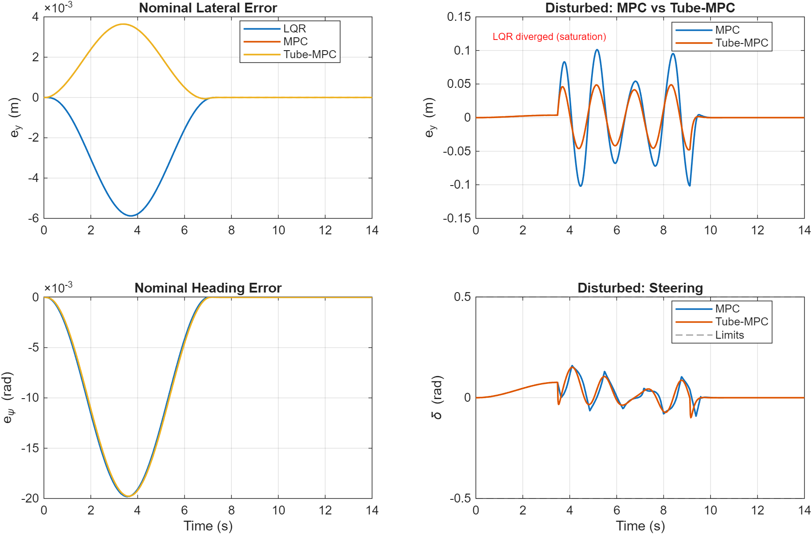
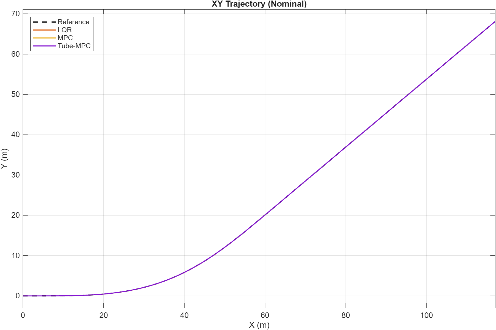
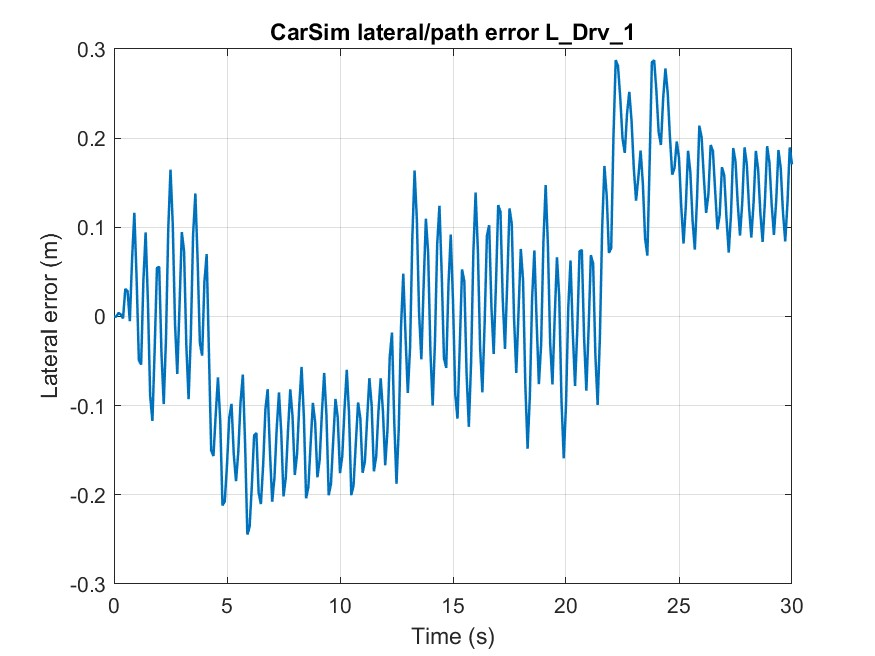
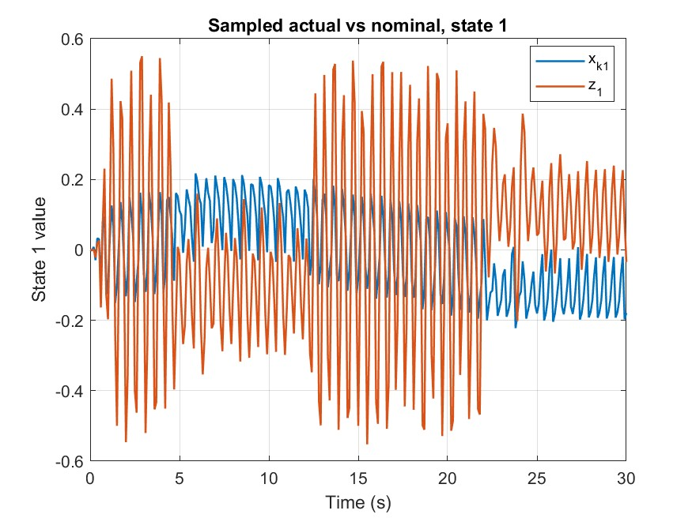
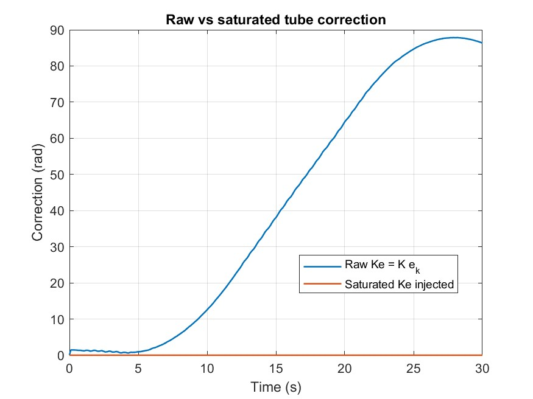

Tube-MPC Lateral Path Tracking with CarSim Co-Simulation
A robust lateral controller for automated driving that survives what breaks nominal controllers: disturbance, model mismatch, and actuator saturation. Nominal MPC plans the tube center; a discrete LQR ancillary loop pulls the real vehicle back toward it — first proven in Simulink, then validated end-to-end against a high-fidelity CarSim vehicle.
Nominal controllers are optimists.
A controller tuned on a clean linear bicycle model tracks that model beautifully — and can fall apart on a real vehicle with nonlinear tires, different mass properties, crosswind, and a steering actuator that saturates. In our benchmarks, an unconstrained LQR under sustained sinusoidal disturbance hit 30.4% steering saturation and diverged outright. The project asks: how do you keep MPC's interpretability while adding a formal robustness margin?
Tube-MPC answers by separating planning from correction. The MPC only has to steer a disturbance-free nominal model; a fast ancillary feedback loop handles the gap between that nominal trajectory and reality, keeping the true state inside a bounded "tube" around the plan.
One law, two loops.
ek = xk − zk // tube error: sampled CarSim state − nominal state
zk+1 = Ad zk + Bd vk // discrete nominal model propagates the tube center
K = [−0.1285 −2.8146 −0.3521 −0.3329] // discrete LQR gain, closed-loop |λ| < 1
The state is the four-vector [ey, eψ, vy, r] — lateral error, heading error, lateral velocity, yaw rate. The MPC block outputs the nominal steering vk; a discrete nominal model generates the tube center zk; the sampled plant (or CarSim) state xk is compared against it; and the LQR gain K applies the correction. Critically, the correction is saturated before it touches the steering interface — the raw ancillary term peaked at 87.8 in the final run, and unbounded injection would have destabilized the high-fidelity vehicle.
LQR vs MPC vs Tube-MPC — same model, same disturbance.
All three controllers ran on one common discrete bicycle model (Ts = 0.02 s), in a nominal case and under a sustained sinusoidal disturbance on the lateral channels.
| Controller · Disturbed | RMS ey | Peak |ey| | Saturation |
|---|---|---|---|
| LQR | diverged | — | 30.4% |
| Constrained MPC (Np=20) | 0.0386 m | 0.1021 m | 0.00% |
| Tube-MPC | 0.0208 m | 0.0489 m | 0.00% |
Nominal case: MPC and Tube-MPC both reached 0.0016 m RMS — 36% better than LQR's 0.0025 m. Verified run, April 2026.


The single most dramatic number came from the tube-on / tube-off ablation on the Simulink plant: with ancillary feedback disabled, max sampled error under disturbance was 18.80 m; enabling the tube collapsed it to 0.0318 m — a 591× reduction from a four-element gain vector.
Surviving contact with a real vehicle model.
Phase 2 swapped the simplified plant for a CarSim external-driver co-simulation while preserving the exact Tube-MPC signal flow. This is where implementation reality lives: unit conversion, steering-ratio and yaw-frame mapping, sampled four-state vector construction from CarSim outputs, and correction saturation. The final 30 s run at 54 km/h completed closed-loop with bounded tube errors (e₁ max 0.455, e₃ max 0.324), max steering-wheel demand of 45.8°, and a fully reproducible results package — saved MAT runs, summary_metrics.csv, plot scripts, and the visualizer animation.



What this project proves.
Robustness is structural, not tuned. Tube-MPC's advantage came from architecture — separating nominal planning from error correction — not from cranking weights. Constraints are the difference between degradation and divergence: the same disturbance that LQR could not survive left both constrained controllers stable. And sim-to-high-fidelity transfer is an engineering discipline of its own — signal frames, unit conversions, and saturation placement mattered as much as the control law once CarSim entered the loop.